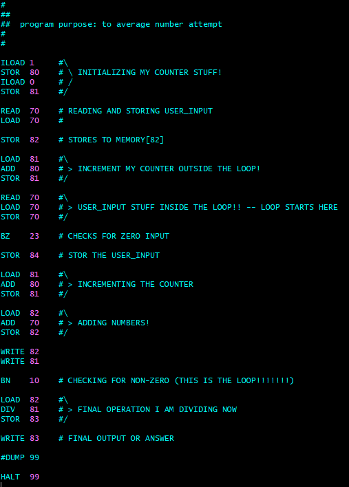

My Projects
-
Project 1 (VPCrte project)
My first significant project took place in Programming Fundamentals II with Professor Mark C. Usnick, Amarillo College, Texas. The project comprised a suite of programs designed to read, compile, and execute assembly code using a custom Runtime Environment.
The first program, Assemble.java, is responsible for reading assembly code from the averageNums.asm file and converting it into code that the RuntimeEnvironment can read.
The second program, VPCrte.java, is designed to decipher the code and execute various commands. Although its implementation is quite basic, it effectively illustrates the underlying processes that occur within a computer as users navigate different browsers and environments.

The final program is the assembly code itself, labeled averageNums.asm, which calculates the average of all numbers entered via the command line. An intriguing aspect of this program is that it utilizes only one General Purpose Register (GPREG), which adds a layer of complexity to finding the solution. We temporarily store unused numbers in random memory locations and retrieve them into the GPREG when needed to perform the calculations.
With all the programs presented, the next step is to run the assembly code through the Assemble.java file using the following command:
java Assemble averageNums.asm.Once executed, the output file named averageNums.exe can be utilized within the Virtual PC runtime environment to calculate the average of the input numbers.
Finally, the code includes a debug option that provides a visual representation of the internal processes, allowing users to see how the computer interprets the information and executes its tasks.

-
Project 2
Description.
View Project